무선설비산업기사 (2019-10-12 기출문제)
1과목: 디지털 전자회로
1. 다음 중 전원 정류회로의 리플 함유율을 적게 하는 방법으로 틀린 것은?
- 출력측 평활형 콘덴서의 정전용량을 작게 한다.
- 평활형 초크 코일의 인덕턴스를 크게 한다,
- 입력측 평활형 콘덴서의 정전용량을 크게 한다.
- 교류입력전원의 주파수를 높게한다.
(정답률: 72%)

2. 다음 중 정류기의 평활회로에 사용되지 않는 것은?
- 콘덴서
- 저항
- 초크 코일
- 다이오드
(정답률: 78%)
3. 다음 3단자 전압 레귤레이터 IC 회로에서 직류 출력전압을 조절할 수 있는 파라미터가 아닌 것은? (단, Vreg=1.25[V], IR1=5[mA], IADJ=100[μA] 이다.)
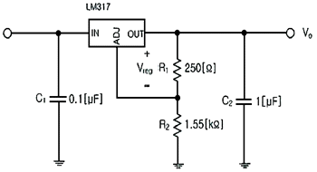
- R1
- R2
- C2
- Vreg
(정답률: 72%)
4. 차동증폭기의 두 입력 전압에 각각 v1 = 7[mV], v2 = 5[mV]가 인가되었다. 차동전압 이득이 150 이고 동상이득이 0.5일 때 출력전압은?
- 301[mV]
- 306[mV]
- 1,801[mV]
- 1,806[mV]
(정답률: 64%)
5. 다음 그림은 베이스 바이어스 회로이다. 동작점에서 VCE전압은? (단, 베이스에미터 전압 VBE=0,7[V]이다.)
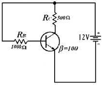
- 2.25[V]
- 6.35[V]
- 11.3[V]
- 12.0[V]
(정답률: 62%)
6. 다음 중 NPN 트랜지스터가 활성영역에서 동작한다고 할 때 바이어스 설명으로 옳은 것은?
- B-C는 순방향, B-E는 역방향으로 공급한다.
- B-C는 역방향, B-E는 순방향으로 공급한다.
- B-C는 순방향, B-E는 순방향으로 공급한다.
- B-C는 역방향, B-E는 역방향으로 공급한다.
(정답률: 76%)
7. 다음 중 저주파에서 고주파에 이르기까지 일정한 스펙트럼을 갖고 나타나는 잡음으로 알맞은 것은?
- 트랜지스터 잡음
- 자연잡음
- 백색잡음
- 지터잡음
(정답률: 85%)
8. 다음 발전기에서 자가 발진을 위한 전압이득 Av의 조건은?
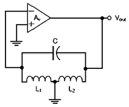
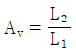
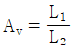
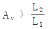
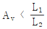
(정답률: 71%)
9. 다음 중 지속적인 출력을 내기 위한 발진기에 이용하는 원리는?
- 정궤환
- 부궤환
- 홀 효과
- 펠티에 효과
(정답률: 83%)
10. 다음 그림과 같은 윈 브리지(Wien Bridge) 발진기에서 제너 다이오드의 역할은 무엇인가?
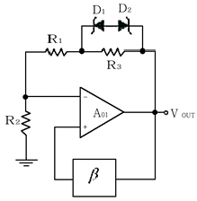
- 발진기의 출력전압을 제어하기 위한 것이다.
- 발진기의 초기시동을 위한 조건을 만든다.
- 페루프 이득이 1이 되도록 한다.
- 궤환신호의 위상이 입력위상과 동상이 되도록 한다,
(정답률: 72%)
11. 다음의 파형은 디지털 변조 방식의 파형이다. 어느 방식의 파영인가?
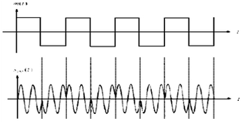
- ASK
- FSK
- PSK
- QAM
(정답률: 77%)
12. PCM 통신 방식에서 송신 과정으로 맞는 것은?
- 표본화-부호화-양자화-압축
- 표본화-양자화-부호화-압축
- 표본화-부호화-압축-부호화
- 표본화-압축-양자화-부호화
(정답률: 80%)
13. AM변조방식에서 변조도에 대한 설명으로 틀린 것은?
- 신호파의 최대값을 반송파의 최대값으로 나눈 값이다,
- 반송파의 크기와 신호파의 크기에 따라 정해진다.
- 최대주파수편이와 신호주파수와의 비이다.
- 진폭변화의 정도를 나타낸다.
(정답률: 65%)
14. 900[kHz]의 반송파를 5[kHz]의 신호주파수로 진폭한 경우 피변조파에 나타나는 주파수 성분이 아닌 것은?
- 895[kHz]
- 900[kHz]
- 9⑤[kHz]
- 910[kHz]
(정답률: 81%)
15. 다음 중 플립플롭(Flip-Flop)과 같은 동작을 하는 회로는?
- LC 발진기
- 수정 발진기
- 쌍안정 멀티바이브레이터
- 단안정 멀티바이브레이터
(정답률: 77%)
16. 다음 회로에서 입력되는 정현파의 최대 진폭이 6[V]일 때 출력에 나타나는 최대 진폭은? (단, Rs=200[Ω], RL=400[Ω])
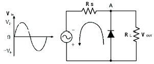
- 2[V]
- 4[V]
- 6[V]
- 8[V]
(정답률: 68%)
17. 다음 진리표를 간략화한 것으로 가장 접합한 논리회로는?
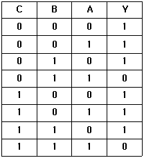
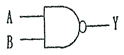
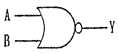
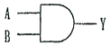
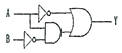
(정답률: 74%)
18. 다음 그림의 회로에 해당하는 논리기호는? (단, 정논리이다)
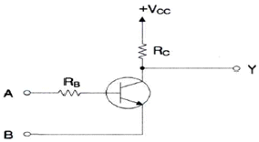
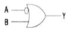
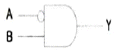
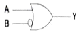
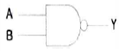
(정답률: 71%)
19. 다음 지금과 같이 2n개(0~7)의 10진수 입력을 넣었을 때, 출력이 2진수(000~111)로 나오는 회로의 명칭은?
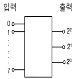
- 디코더
- A-D 변환회로
- D-A 변환회로
- 인코더 회로
(정답률: 73%)
20. 다음 중 링 카운터에 대한 설명으로 틀린 것은?
- 클럭 신호를 받을 때 마다 상태가 하나씩 다음으로 이동한 카운터이다.
- 각각의 상태마다 한 개의 플립플롭을 사용하는 카운터이다.
- 디코딩게이트를 사용해야만 디코딩할 수 있다.
- 시프트 레지스터의 마지막 단 출력을 첫 단에 궤환시킨다.
(정답률: 74%)
2과목: 무선통신 기기
21. GPS 인공위성은 지상 약 20,200[Km] 상공에서 시간당 약 14,000[Km]거리를 이동한다. 초당 속력은 약 얼마인가?
- 3.9[Km/s]
- 4.9[Km/s]
- 5.9[Km/s]
- 6.9[Km/s]
(정답률: 60%)
22. 피크-피크 전압이 8[V]인 아날로그 신호를 일정한 간격으로 하여 16개의 레벨로 나눈 경우 S/N는 몇[dB]인가?
- 약 8[dB]
- 약 25.8[dB]
- 약 38.8[dB]
- 약 49.8[dB]
(정답률: 58%)
23. 다음 중 벡터 합성법에 의한 FM송신기에 대한 설명으로 틀린 것은?
- 리액턴스관을 사용하여 주파수 안정도가 좋지 않다.
- 자동주파수 제어회로가 불필요하다.
- IDC회로에서 일정 입력 레벨로 증폭을 제한한다.
- 위상 변조로 등가 FM파를 얻으려면 전치보상기 회로가 필요하다.
(정답률: 61%)
24. 다음 중 AM 수신기의 중간주파수를 낮게 선정했을 때 개선되는 것은?
- 인입현상
- 충실도
- 근접주파수 선택도
- 영상주파수 선택도
(정답률: 61%)
25. FM 검파기의 특성인 S 커브의 상태가 직선이 아니면 어떤 상태인가?
- 동조가 벗어난다.
- 출력이 적어진다.
- 복조감도가 나쁘다.
- 잡음이 감소한다.
(정답률: 66%)
26. 다음 중 FM통신방식이 AM통신방식에 비해 신호대 잡음비가 좋은 이유로 가장 적합한 것은?
- 리미터를 사용한다,
- 클라리파이어를 사용하므로
- AGC 회로를 사용하므로
- 깊은 변조를 할 수 있으므로
(정답률: 68%)
27. 방송용 FM수신기에서 비 검파 회로가 주로 사용되는 이유는?
- AFC 작용을 갖는다.
- AVC 작용을 갖는다.
- 디엠퍼시스 작용을 갖는다.
- 진폭제한 작용을 갖는다.
(정답률: 62%)
28. 다음 중 인지 무선(CR: Cognitive Radio)의 개념 설명으로 틀린 것은?
- 지역, 시간별로 미사용 주파수를 자동 검색해 활용한다,
- 해당 스펙트럼에서의 통신 특성에 자동적으로 적응한다.
- 고정국을 위해 적용되는 기술이다.
- 서로 다른 주파수 간에 로밍이 가능하다.
(정답률: 69%)
29. 기지국, 유선인터넷망,Gateway 및 O&M Server로 구성되며 Core 네트워크와의 연계를 통해 LTE 전화 및 무선데이터 통신을 제공하는 서비스기술은?
- 펨토셀
- WIFI
- WiMax
- GPS
(정답률: 83%)
30. 이동 통신 시스템에서는 셀과 셀을 오가면서 통화를 할 수 있도록 해주는 것을 핸드오프(Hand-off)라고 하는데 그 종류가 아닌 것은?
- 하드 핸드오프(Hard Hand-off)
- 하더 핸드오프(Harder Hand-off)
- 소프트 핸드오프(Soft Hand-off)
- 소프터 핸드오프(Softer Hand-off)
(정답률: 79%)
31. 국내 최초의 민간 통신-방송 상용위성을 우리나라를 세계 23번째 위성 보유국의 반열에 올려놓은 위성은?
- 아리랑 위성
- 우리별 위성
- 무궁화 위성
- 한누리위성
(정답률: 83%)
32. 4세대 이동통신에 해당되는 변조 방식은?
- FDMA
- SDMA
- TDMA
- OFDM
(정답률: 73%)
33. 위성 통신용으로 이용하는 궤도는 지구 정지형, 극 원형, 경사 타원형으로 구분되며 이 때 궤도의 선택은 다음 요소를 결정하는데 중요하다. 이에 해당 되지 않는 것은?
- 주어진 지점에서의 위성 관측시간
- 위성 통신의 크기
- 지연 시간과 전송 손실
- 지표면 확보 범위
(정답률: 76%)
34. 다음 중 수신기의 전기적 성능에 해당되지 않는 것은?
- 감도
- 선택도
- 충실도
- 전력
(정답률: 74%)
35. 다음 중 CDMA 중계기의 상태를 감시하기 위해 중계기에서 공급되는 전원을 사용하여 감시단말기를 중계기에 연결할 경우 필요한 장치는?(단, 중계기의 공급전원 DC(직류)는 12{V}이고 단말기가 필요로 하는 전원은 DC(직류) 3.5[V]이다.)
- 컨버터(converter)
- 인버터(inverter)
- 정류기(Rectifier)
- 계전기(relay)
(정답률: 71%)
36. 다음 중 VC 컨버터의 종류와 명칭이 올바로 묶여진 것은?
- AC-DC 컨버터=제어정류기, DC=DC 컨버터=스위칭레귤레이터, AC-AC 컨버터=교류전압제어기
- AC-DC 컨버터=교류전압제어기, DC=DC 컨버터=스위칭레귤레이터, AC-AC 컨버터=제어정류기
- AC-DC 컨버터=제어정류기, DC=DC 컨버터=교류전압제어기, AC-AC 컨버터=스위칭레귤레이터
- AC-DC 컨버터=교류전압제어기, DC=DC 컨버터=제어정류기, AC-AC 컨버터=스위칭레귤레이터
(정답률: 72%)
37. 다음 중 스펙트럼 분석기의 용도로 맞지 않은 것은?
- 펄스폭 및 반복률 측정
- 안테나 패턴 측정
- RF 간섭시험
- 변조의 직선성 측정
(정답률: 57%)
38. 대전력 송신기용 정류기의 부하양단평균전압이 3,000[V], 맥동률1.5%라고 한다. 이 때의 교류분은 몇 [V]인가?
- 4.5[V]
- 45[V]
- 450[V]
- 4,500[V]
(정답률: 73%)
39. 다음 그림은 PLL의 기본적인 구성요소를 나타낸 것이다. (A)에 들어갈 요소는 무엇인가?
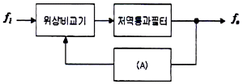
- 전압제어발진기(VCO)
- 샘플링(Sampling)회로
- 증폭기(Amplifier)
- 정류기(Rectifier)
(정답률: 79%)
40. 1.000[kHz]의 반송파신호가 3[kHz]의 신호파에 의해 진폭변조되었다면 AM 신호의 주파수 스펙트럼에 나타나는 성분은?
- 3[kHz], 6[kHz], 1,000[0
- 997[kHz], 1,000[kHz], 1,003[3]
- 1,000[kHz], 1,003[kHz], 1,006[6
- 994[kHz], 1,000[kHz], 1.006[kHz]
(정답률: 85%)
3과목: 안테나 개론
41. 다음 전자파에 대한 설명 중 틀린 것은?
- 전파는 종파이다.
- 정전계에서는 에너지 이동이 없다.
- 유도전자계는 거리의 제곱에 반비례하여 감쇠한다.
- 복사전자계는 거리에 반비례하여 감쇠한다.
(정답률: 82%)
42. 무손실 매질 내 비유전율 5, 비투자율 5이고 주파수3[GHz]인 평면파가 전파할 때 이 파에 대한 파장[m]과 파동 임피던스[Ω]는?
- 0.01[m], 128[Ω]
- 0.02[m], 256[Ω]
- 0.01[m], 256[Ω]
- 0.02[m], 377[Ω]
(정답률: 72%)
43. 다음 중 유전체에서 발생하는 변위전류에 대한 설명으로 옳은 것은?
- 변위전류의 크기는 일정 전속밀도의 경우 시간적 변화가 적을수록 커진다.
- 분극 전하밀도의 시간적 변화에 따라 발생한다.
- 전속밀도의 공간적 변화를 나타내는 용어이다.
- 전류의 크기가 유전체의 크기에 따라 변화되는 전류를 말한다.
(정답률: 53%)
44. 임의의 부하 임피던스를 갖는 일정 길이의 전송선로 입력 임피던스를 나타내는 식으로 전송선로의 임피던스 방정식이라 불리는 것은?
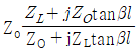
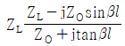
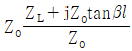
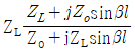
(정답률: 69%)
45. 특성 임피던스가 75[Ω]인 급전선상의 전압정재파비(VSWR)가 4라면 반사계수는 얼마인가?
- 0.2
- 0.4
- 0.6
- 0.8
(정답률: 70%)
46. 다음 중 초고주파 대역에서 사용되는 수동소자에 대한 설명으로 틀린 것은?
- 어떤 전송 선로로 전달되는 전력의 크기 등을 측정할 때 방향성 결합기가 사용된다.
- 전력을 두 개 이상의 작은 전력으로 나누는데 전력분배기가 사용된다.
- 감쇠기는 마이크로파 전력의 크기를 감소시키는데 사용되는 소자이다.
- 아이솔레이터와 서큘레이터는 신호를 한쪽 방향으로 전달하거나 반대방향으로도 전달하는 가역 특성을 갖는다.
(정답률: 76%)
47. 다음 중 급전선이 일반적으로 갖추어야 하는 조건이 아닌 것은?
- 전송 효율이 가급적 높아야 한다.
- 송신용의 경우 절연 내력(내압)이 큰 것이 좋다,
- 특성 임피던스는 높은 것이 좋다,
- 유도 방해를 받거나 주지 말아야 한다.
(정답률: 68%)
48. 다음 중 안테나를 설계할 때 임피던스 정합 회로를 사용하는 이유로 적합하지 않은 것은?
- 왜율이나 이중상(Ghost) 발생을 방지하기 위하여
- 최대 전력을 전송하기 위하여
- 전송선로와 안테나 정합부에서 반사를 최소화하기 위하여
- 전송선로의 정재파비를 최대화하기 위하여
(정답률: 74%)
49. 다음 중 접지안테나의 방사효율을 높이기 위한 방법이 아닌 것은?
- 안테나의 실효고를 증가시킨다.
- 안테나의 공급전류를 증가시킨다,
- 접지저항을 작게한다
- 방사저항을 작게한다.
(정답률: 69%)
50. 공진회로에서 1.5[H]의 인덕터와 0.4[μF]의 커패시터가 직렬 연결된 경우 공진주파수는 약 얼마인가?
- 103[Hz]
- 2⑤[Hz]
- 301[Hz]
- 4⑤[Hz]
(정답률: 67%)
51. 반파장 소자를 종횡으로 일정하게 배열하여 각 소자에 동위상 전류를 공급하면 한쪽 방향으로 지향성이 강해지는 안테나는?
- V형 안테나
- 롬빅 안테나
- 빔 안테나
- 제펠린 안테나
(정답률: 78%)
52. 다음 중 Collinear-Array 안테나의 설명으로 틀린 것은?
- 소자수가 많아질수록 이득이 커진다,
- 수직면내 지향성이 예민하여 고이득 안테나로서 사용된다,
- 각 소자는 90° 위상차를 갖고 크기가 같은 신호로 급전한다.
- VHF(very high frequency)대 이동무선 기지국용 및 중계국용으로 널리 이용된다.
(정답률: 67%)
53. 다음 중 안테나의 길이를 줄이지 않고 안테나 고유주파수보다 높은 주파수에 공진시키기 위한 방법으로 적합한 것은?
- 안테나와 직렬로 코일을 접속한다.
- 안테나와 병렬로 코일을 접속한다.
- 안테나와 직렬로 콘덴서를 접속한다.
- 안테나와 병렬로 콘덴서를 접속한다.
(정답률: 72%)
54. 송신안테나와 수신안테나가 200λ[m] 떨어져 있고, 각각의 방향성 이득은 20[dB]와 15[dB]이다. 만일 송신전력이 10[W]였다면 수신안테나의 수신전력은 얼마인가?
- 약3[mW]
- 약4[mW]
- 약5[mW]
- 약6[mW]
(정답률: 58%)
55. 다음 중 전리층의 전리전자밀도가 큰 순서대로 옳게 표시한 것은?
- D층＞E층＞F층
- E층＞D층＞F층
- E층＞F층＞D층
- F층＞E층＞D층
(정답률: 74%)
56. 다음 중 수정 굴절률 M곡선 중에서 (dM/dh)<0의 부분이 존재하지 않는 것은?
- 표준형
- 접지 S형
- 이지 S형
- 접지형
(정답률: 60%)
57. 전리층의 높이를 관측하기 위하여 지구 표면에서 상공을 향하여 충격파를 발사하였더니 4[ms] 후에 반사파를 받았다. 이 때 전리층의 높이는 몇[Km]인가
- 300[Km]
- 400[Km]
- 600[Km]
- 1,200[Km]
(정답률: 63%)
58. 다음 중 전리층에서 일어나는 현상이 아닌 것은?
- 전파의 회절
- 전파의 산란
- 전파의 반사
- 전파의 굴절
(정답률: 77%)
59. 지상파와 공간파가 간섭을 일으키면 어떤 현상이 일어나는가?
- 자기람
- 델린져현상
- 페이딩
- 대척점 효과
(정답률: 71%)
60. 다음 중 초단파의 전파 특성에 대한 설명으로 틀린 것은?
- 주파수가 높기 때문에 지표파는 감쇠가 심하다,
- 태양의 활동에 따라 수신 강도의 변화는 단파보다 영향이 심하다.
- 대기의 굴절 때문에 기하학적 가시거리보다 약간 멀리까지 도달한다.
- 직접파와 대지 반사파에 의해서 전계강도가 정해진다.
(정답률: 71%)
4과목: 전자계산기 일반 및 무선설비기준
61. 마이크로프로세서 병렬 처리에서 단계로써 맞는 것은 무엇인가?
- Fetch-Execute-Decode-Write
- Execute-Decode- Fetch-Write
- Fetch-Decode-Execute-Write
- Decode-Execute- Fetch-Write
(정답률: 71%)
62. 이것은 CPU를 구성하는 하드웨어 중 명령어 실행에 반드시 필요한 핵심 모듈로서 명령어 파이프라인들로 이뤄진 슈퍼스칼라 모듈과 ALU 및 레지스터 집합 등을 의미하기도 한다. 최근 이와 같은 것을 하나의 칩에 여러 개 넣은 것들이 출시 되고 있다. 여기서 '이것이' 의미하는 것으로 옳은 것은?
- 스칼라
- 캐쉬(Cache)
- 파이프라인
- 코어(Core)
(정답률: 77%)
63. 다음은 CPU에 서비스를 받으려고 도착한 순서대로 프로세스와 그 서비스 시간을 나타낸다. FCFS(first Come Served) CPU Scheduling에 의해서 프로세스를 처리한다고 했을 경우 프로세스의 평균 대기시간은 얼마인가?
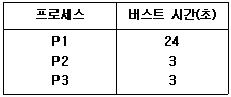
- 15초
- 16초
- 17초
- 18초
(정답률: 68%)
64. 다음 중 어셈블리 명령어(MOV R0, R1)에 대한 설명으로 옳은 것은?
- 레지스터간 R0,R1 데이터의 덧셈 수행
- R0,R1을 스택에 저장
- R1을 R0 번지에 저장
- 레지스터 R1의 데이터를 R0로 이동
(정답률: 68%)
65. 디스크 시스템의 성능과 신뢰성을 향상시키기 위해서 디스크 드라이브의 배열을 구성하여 하나의 유니트로 패키지 함으로써 액세스 속도를 크게 향상시키고 신뢰도를 높인 것을 무엇이라 하는가?
- 자기 디스크 장치(magnetic disk unit)
- RAID(redundant array of inexpensive disk)
- 자기 테이프 장치(magnetic tape Unit)
- 램 디스크 장치(RAM-disk Unit)
(정답률: 79%)
66. 다음 중 데드락(Deadlock)을 발생시키는 원인이 아닌 것은?
- 점유와 대기
- 순환 대기
- 상호 배제
- 선점 방식
(정답률: 76%)
67. 다음 중 선점 스케줄링 방식에 대한 설명으로 틀린 것은?
- 빠른 응답을 요구하는 시분할 시스템에 적합하다.
- 우선 순위가 높은 프로세스들이 빠르게 처리될 수 있다.
- 일단 프로세서를 할당 받으면 완료될 때까지 점유한다.
- 오버헤드가 발생한다.
(정답률: 60%)
68. 다음 중 가상기억(virtual memory) 체계에 대한 설명으로 틀린 것은?
- 하드웨어에 의한 것이 아니라 소프트웨어에 의해 실현된다.
- 주기억장치와 보조 기억 장치가 계층 기억 체제를 이루고 있다.
- 가상기억장치의 목적은 기억공간이 아니라 속도이다.
- 컴퓨터의 기억 용량을 확장하기 위한 방법이다.
(정답률: 70%)
69. Shift register에 있는 이진수 number가 5번 Shifte-left 되었을 때 결과값으로 알맞은 것은?
- number * 5
- number / 5
- number * 32
- number / 32
(정답률: 72%)
70. 다음과 같은 운영체제의 운용 기법은?
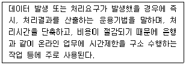
- 단일 사용자 시스템
- 실시간 처리 시스템
- 분산 처리 시스템
- 시분할 시스템
(정답률: 83%)
71. 다음 중 시설자가 무선국을 운용함에 있어 준수해야 할 통신보안 준수사항이 아닌 것은?
- 자체 통신보안업무계획의 수립 및 시행
- 비밀 및 대외비 내용의 통신 시 보안 자재 사용
- 비인가 보안자재 사용
- 통신보안 책임자 지정
(정답률: 76%)
72. 다음 중 '방송통신기자재 등의 적합성평가에 관한 고시'에서 규정하는 용어의 정의로 틀린 것은?
- '사후관리'라 함은 적합성평가를 받은 기자재가 적합성평가기준대로 제조.수입 또는 판매되고 있는지 관련법에 따라 조사 또는 시험하는 것을 말한다.
- '기본모델'이란 전기적인 회로.구성,성능이 동일하고 기능이 유사한 제품군 중 표본이 되는 기자재를 말한다.
- '파생모델'이란 기본모델과 전기적인 회로.구성.성능만 다르고 그 부가적인 기능은 동일한 기자재를 말한다.
- '제조자'라 함은 기자재를 설계하여 직접 제작하거나 상표부착방식에 따라 기자재를 공급받는 자로서 해당 기자재의 설계.제작에 대한 책임을 지는 자를 말한다.
(정답률: 80%)
73. 다음 중 신고를 통해 개설할 수 있는 무선국은?
- 실험국
- 선박국
- 항공국
- 수신전용 무선국
(정답률: 66%)
74. 다음 중 송신설비의 안테나.급전선 등 고압전기를 통과하는 장치는 사람이 보행하거나 생활하는 평면으로부터 최소 몇[m] 이상의 높이에 설피되어야 하는가?
- 2.5[m]이상
- 3[m]이상
- 3.5[m]이상
- 4[m]이상
(정답률: 78%)
75. 다음 중 선박국용 레이다 기기의 기기부호로 틀린 것은?
- 국제항해용 레이다 중 표시면의 유효직경 32[Cm] 이상 : RAL
- 국내항해용 레이다 : RC
- 국내소형선박용 레이다 : RD
- 국제항해용 레이다 중 표시 면의 유효직경 18[cm] 이상 25[Cm]미만 : RAM
(정답률: 76%)
76. 다음 중 송신설비의 전력을 표시하는 방법에 대한 설명으로 틀린 것은?
- 송신설비의 전력은 안테나공급전력으로 표시한다.
- 실험국(방송을 하는 실험국은 제외)의 송신설비는 규격전력으로 표시한다.
- 아마추어국의 송신설비 전력은 규격전력으로 표시한다.
- 종단 송신설비의 전력은 변조전력으로 표시한다.
(정답률: 67%)
77. 다음 중 국립전파연구원장이 적합인증서를 신청인에게 발급하고, 관보에 공고하여야 할 내용으로 알맞지 않은 것은?
- 인증번호
- 인증 받은 자의 상호 또는 성명
- 기자재의 명칭.모델명
- 유효기간
(정답률: 68%)
78. 전력선통신설비 및 유도식통신설비에서 발사되는 주파수허용편차는 몇(%) 이내여야 하는가?
- 0.7[%]
- 0.5[%]
- 0.3[%]
- 0.1[%]
(정답률: 67%)
79. 아마추어국의 개설조건 중 이동하는 아마추어국의 경우 안테나공급전력은 몇 와트 이하이어야 하는가?
- 500와트
- 300와트
- 100와트
- 50와트
(정답률: 65%)
80. 다음 괄호 안에 들어갈 내용으로 옳은 것은
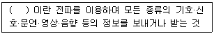
- 정보통신
- 무선통신
- 전파통신
- 전기통신
(정답률: 81%)